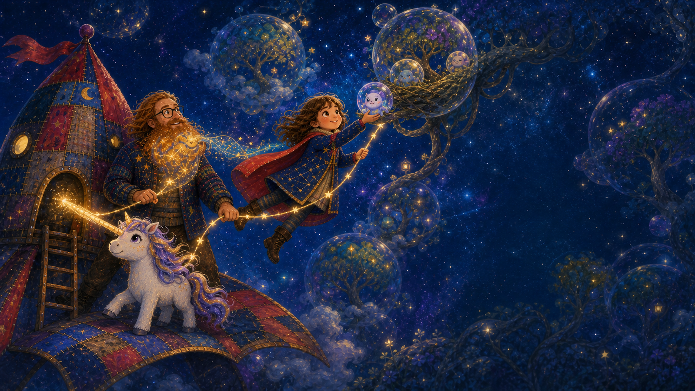
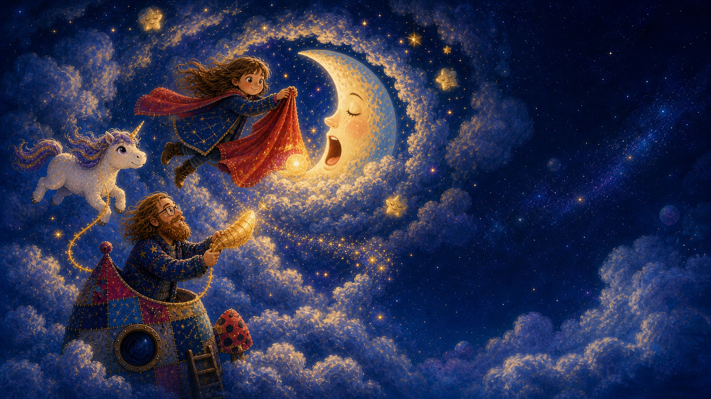
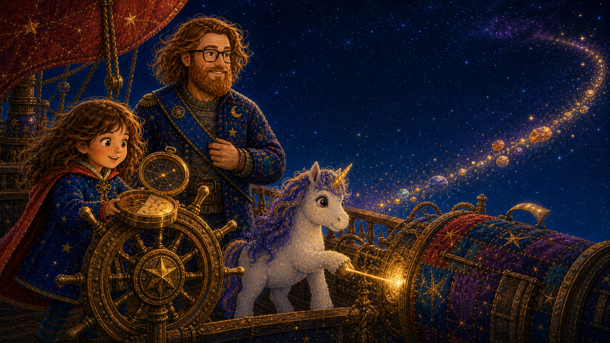
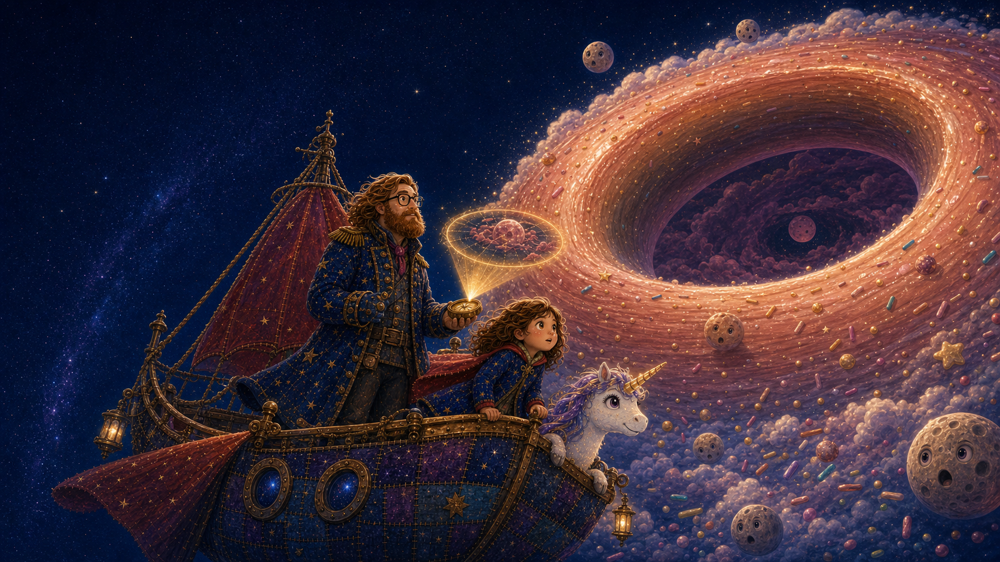
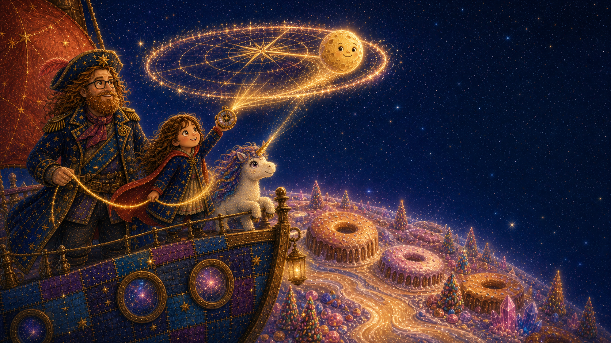

First voyage · 8 spreads
The Three Little Planets
Three tiny worlds need a steady hand, a listening heart, and one very gentle bedtime crew.
The little library between stars
Choose a book, cuddle in, and turn the galaxy one illustrated page at a time.
On the shelf
Swipe the pages, move or shrink the words, or let the browser read aloud.
First voyage · 8 spreads
Three tiny worlds need a steady hand, a listening heart, and one very gentle bedtime crew.
New voyage · 8 spreads
A round clue, a storm of sprinkles, and a cozy explorer growing into a proper space-pirate captain.

Tonight’s read-together adventure
Juliet, Uni, and Starbeard follow a magical map hidden in his beard through three little planets. Each world holds one piece of a starlit path that can lead them safely home.

One starry almost-bedtime…
Starbeard heard a tiny chime under his chin. When he combed his beard, out floated a ribbon of starlight with three little planets painted across it. The planets glowed, but every path between them had gone dark.
Juliet tied her red cape to the blanket rocket as a sail. Uni warmed the patchwork engine with a golden spark. On the map, the first planet blinked three times, like a porch light calling friends home.
“Three worlds are calling,” Juliet said. “Let’s answer together.”

Little Planet One · Tumble-Turn
Bubble trees drifted above their roots. Mossy paths curled along the sky. Even the raindrops rose from puddles and disappeared into the stars. The first silver path in Starbeard’s beard-map flickered as if it might vanish.
High in a twisting branch, a baby pearl-bubble had bounced out of its nest. It spun farther away each time the little planet rolled.
“Hold hands,” Juliet said. “If the planet will not choose an up, we will make our own.”

The first path
Uni pressed her hooves against the rocket and anchored it with a warm beam. Starbeard looped a rope of stars around his waist. Juliet held the other end, opened her cape, and swung through the floating forest.
On the count of three, she caught the giggling pearl-bubble and tucked it into its branch-nest. The bubble trees settled around their roots, and the whole planet turned right-side up.
Inside Starbeard’s beard, the first silver path shone bright and pointed to the next little world.

Little Planet Two · Luma Bloom
The map led them to Luma Bloom, where bell flowers should have rung each evening to grow a bridge of light. Tonight every flower hung silent, and the crew could not cross the dark valley to the map’s next star.
Juliet knelt beside a tiny seed humming under a leaf. She hummed the same note back. Uni added a silver harmony, Starbeard added a jingling bass, and one by one the bell flowers lifted their heads. A bridge bloomed across the valley, and the second path lit beside the first.
“You had the song all along,” Juliet told the seed. “We only needed to listen.”

Little Planet Three · Naptune
Two bright paths now curled through Starbeard’s beard-map. The last one led to Naptune, where every sleepy star was yawning except the crescent moon. Naptune’s golden dream seed had blown into a maze of drifting cloud rings.
Without the seed, the moon could not sleep. Without the moon’s dream, the map could not reveal the way home. Juliet and Uni floated after the warm glow while Starbeard anchored their rope to the rocket.
“We got this far together,” Juliet said. “We finish together.”

The third path
Uni lit the safest ring and Starbeard kept the rope steady as the clouds rolled like slow waves. Juliet wrapped the seed in her cape so its golden dreams would not spill into space.
She placed it beside the moon. Naptune gave one enormous, peaceful yawn. The sleepy stars tucked themselves into the clouds, and the final silver path shone inside Starbeard’s beard.
All three paths joined into one bright trail pointing home.

Home again
At dawn, the map guided their patchwork rocket back to the blanket fort. They planted a tiny gift from Naptune beside the porch, and it opened into a starflower with three glowing petals, one for each world they had helped.
Starbeard carefully curled the magic map back into his beard, where it could sleep until another world called. Juliet tucked her cape around Uni and watched Tumble-Turn, Luma Bloom, and Naptune shine together in the morning sky.
Three little planets were safe, and three explorers were already dreaming of where the map might lead next.

A marmalade-map adventure
When a golden map swirls out of Juliet’s breakfast, she, Uni, and Starbeard follow it past the Sprinkle Belt to a silent doughnut planet. There, a tiny moon needs a brave, gentle rescue.

Breakfast aboard the patchwork star-sloop
Juliet drew one slow circle through the orange-gold marmalade. Her spoon began to tingle. Then the sticky swirl lifted from her toast and opened above the breakfast table as a shining map shaped like a ring.
Inside the ring, a tiny golden moon blinked once, twice, and disappeared beneath a raspberry-colored storm. A trail of glowing crumbs ran from their porthole into the stars.
“Someone tucked a call for help inside our breakfast,” Uni whispered.

Starbeard’s captain look · The sash and compass
The map curled into Starbeard’s empty brass compass without spilling a drop. Juliet matched its crumb-trail to the constellations while Uni warmed the patchwork engine with one gentle beam.
Starbeard tied a midnight-blue sash over his cardigan. His new captain voice squeaked on the first try, so he breathed, smiled at his crew, and tried again.
“Course set for the round horizon,” he said. “Together.”

Starbeard’s captain look · The long coat
The glowing crumbs led straight into tumbling crystal sprinkles, purple, blue, orange, and green. Each one spun like a tiny log in a very sparkly river.
Juliet kept both hands steady on the wheel. Uni nudged the widest sprinkles aside. Starbeard listened to them and called the safe turns. As he did, his cardigan stretched into a long starry coat with bright brass buttons.
“Port past the purple! Now starboard around the blue!”

Doughnut Planet · Rosegold Ring
They sailed out of the last sparkle and found glaze seas, icing clouds, and forests of chiming sugar trees. But the seas did not move. The trees did not sing. Even the moonlets stared worriedly into the empty middle.
The marmalade map brightened. It showed the missing golden moon trapped below, tangled in a sticky raspberry storm. Without the moon’s pull, the whole round world had gone still.
“The map did not lead us to treasure,” Juliet said. “It led us to a neighbor.”

Starbeard’s captain look · The starry hat
The crew landed on the inner rim, where the wind rushed around and around the enormous hollow sky. Far below, the little moon bobbed inside jam-colored clouds and called with a bell-small peep.
Juliet opened her cape into a sail. Uni aimed her horn through the safest gap. Starbeard wrapped their shining rope around himself and a sturdy sugar-crystal root. A wide starry captain hat appeared atop his curls.
“Ready when you are, Captain,” Juliet said. “Ready because you are,” he answered.

One cape, one horn, one steady rope
Uni’s warm beam loosened the storm. Juliet caught the moon in her cape, but its proper orbit was too dark to see. Then she raised the marmalade compass. The golden map sprang open once more, drawing a bright circle through the sky.
Starbeard eased the rope, Juliet gave the cape one careful swing, and the moon rolled onto the glowing path. Glaze seas rushed, sprinkle trees rang, and golden sparks braided themselves through Starbeard’s beard.
The moon completed one bright orbit, and the whole Doughnut Planet woke up.

A galaxy of round horizons
The grateful moon pressed one crumb-shaped star into the brass compass. Around it appeared a trail of new rings: blueberry, peach-gold, lavender, and one speckled like birthday cake.
Juliet tucked the compass beside the marmalade jar. Uni curled up near the warm engine. Starbeard, now wearing sash, coat, captain hat, and a beard full of starlight, turned the ship toward the first unknown ring.
“Good thing,” he said, “this crew packed plenty of toast.”